🧭 1. Tổng quan điểm đến
Trải qua hơn 500 triệu năm kiến tạo địa chất phức tạp và quá trình phong hóa karst ngập triều qua các kỷ băng hà, Vịnh Hạ Long sở hữu hệ thống hang động thạch nhũ huyền ảo bậc nhất thế giới cùng hệ sinh thái nhiệt đới hải đảo nguyên sinh giàu tính đa dạng sinh học. Từ những đỉnh núi hình tháp nhọn hoắt, vách đá dựng đứng soi bóng đáy nước đến các áng, tùng kín gió được bao bọc bởi rừng ngập mặn và rạn san hô rực rỡ, mỗi góc nhìn nơi đây đều mang vẻ đẹp siêu thực kỳ vĩ.
Nổi tiếng với văn hóa làng chài nổi cổ truyền hàng ngàn năm, ẩm thực hải sản phong phú và hệ thống du thuyền 5 sao đẳng cấp thế giới, Hạ Long mang đến cho du khách trải nghiệm vừa đậm đà bản sắc vừa đỉnh cao nghỉ dưỡng quốc tế.
📜 2. Vị trí địa lý & Dấu ấn lịch sử
Vịnh Hạ Long có diện tích tự nhiên khoảng 1.553 km² bao gồm 1.969 hòn đảo, trong đó khu vực vùng lõi di sản được bảo vệ nghiêm ngặt có diện tích 434 km² với 775 hòn đảo. Phía tây và tây bắc giáp đất liền thành phố Hạ Long và thành phố Cẩm Phả; phía đông nam và phía nam mở rộng ra Vịnh Bắc Bộ và tiếp giáp với quần đảo Cát Bà (Hải Phòng). Khí hậu Hạ Long là khí hậu miền biển hai mùa rõ rệt: mùa hạ nóng ẩm mưa nhiều và mùa đông khô lạnh mát mẻ.
⚖️ Căn cứ Pháp lý & Quyết định Xếp hạng Di sản Chính thống
Giá trị ngoại hạng toàn cầu của Vịnh Hạ Long đã được cộng đồng quốc tế và Nhà nước Việt Nam khẳng định bằng hệ thống văn bản pháp lý cao nhất:
- Công nhận Di sản Thế giới lần 1 (17/12/1994): Kỳ họp thứ 18 của Ủy ban Di sản Thế giới UNESCO tại Phuket (Thái Lan) chính thức ghi danh Vịnh Hạ Long là Di sản Thiên nhiên Thế giới theo tiêu chuẩn (vii) về giá trị thẩm mỹ cảnh quan thiên nhiên ngoại hạng toàn cầu.
- Công nhận Di sản Thế giới lần 2 (02/12/2000): Kỳ họp thứ 24 của Ủy ban Di sản Thế giới tại Cairns (Úc) công nhận lần thứ hai về giá trị địa chất - địa mạo nổi bật toàn cầu theo tiêu chuẩn (viii).
- Mở rộng Di sản liên tỉnh Vịnh Hạ Long - Quần đảo Cát Bà (16/09/2023): Tại Kỳ họp thứ 45 ở Riyadh (Ả Rập Xê Út), UNESCO chính thức công nhận Vịnh Hạ Long - Quần đảo Cát Bà là Di sản Thiên nhiên Thế giới liên tỉnh/thành phố đầu tiên của Việt Nam.
- Quyết định số 1272/QĐ-TTg ngày 12/08/2009 của Thủ tướng Chính phủ: Xếp hạng Vịnh Hạ Long là Di tích Quốc gia Đặc biệt (Đợt 1).
- Quyết định số 702/QĐ-TTg ngày 07/06/2021 của Thủ tướng Chính phủ: Phê duyệt Điều chỉnh Quy hoạch chung thành phố Hạ Long đến năm 2040, tầm nhìn đến năm 2050 (định vị Hạ Long là trung tâm du lịch quốc gia mang tầm quốc tế).
Về dấu ấn lịch sử - khảo cổ, Vịnh Hạ Long là cái nôi của các nền văn hóa tiền sử rực rỡ cách đây từ 25.000 đến 3.000 năm trước: Văn hóa Soi Nhụ (thời đồ đá cũ), Văn hóa Cái Bèo và Văn hóa Hạ Long (thời đồ đá mới với kỹ thuật chế tác rìu đá có vai, gốm xốp trang trí hoa văn vặn thừng độc đáo). Dấu tích người tiền sử cư trú còn nguyên vẹn trong các hang động Mê Cung, Tiên Ông, Bồ Nái.
Trong lịch sử dựng nước và giữ nước, vùng biển đảo Hạ Long là phên dậu Đông Bắc hiểm yếu của Tổ quốc. Nơi đây gắn liền với chiến công hiển hách của Hưng Đạo Đại Vương Trần Quốc Tuấn trong trận thủy chiến Bạch Đằng Giang năm 1288 đánh tan đoàn thuyền lương quân xâm lược Nguyên - Mông, mà dấu tích cọc gỗ lim giấu trong hang núi vẫn lưu danh muôn thuở tại Động Đầu Gỗ.
🐉 3. Huyền thoại Rồng Mẹ hạ giới
💎 Truyền thuyết Rồng Mẹ phun châu nhả ngọc ngăn giặc ngoại xâm
Từ thuở khai thiên lập địa khi người Việt mới lập nước, giặc ngoại bang từ phương Bắc theo đường biển ồ ạt kéo thuyền chiến vào cướp phá. Thương xót dân lành cơ cực, Ngọc Hoàng đã phái đàn Rồng gồm Rồng Mẹ dẫn theo đàn Rồng Con giáng trần giúp người trần đánh giặc. Khi thuyền giặc vừa tiến vào cửa vịnh, đàn Rồng lập tức phun ra muôn ngàn viên ngọc châu lấp lánh. Những viên ngọc vừa chạm mặt nước liền hóa thành muôn trùng vách đá khổng lồ, dựng nên bức tường thành đá vôi sừng sững giữa biển khơi. Thuyền giặc đâm vào đá vỡ tan tành, bờ cõi nước Việt sạch bóng quân thù. Sau chiến thắng, thấy non xanh nước biếc thanh bình, đàn Rồng không về trời mà quyết định ở lại trần gian chở che con dân đất Việt. Nơi Rồng Mẹ đáp xuống gọi là Hạ Long, nơi Rồng Con quây quần gọi là Bái Tử Long, và nơi đàn Rồng quẫy đuôi quạt trắng xóa gọi là Bạch Long Vĩ.
🪵 Huyền tích Động Đầu Gỗ & Dấu tích cọc Bạch Đằng 1288
Tương tự như huyền thoại giữ nước, Động Đầu Gỗ nằm ở độ cao 27m so với mực nước biển, vốn mang tên dân gian Giấu Gỗ. Tương truyền trong chiến dịch kháng chiến chống quân Nguyên Mông năm 1288, Hưng Đạo Đại Vương Trần Quốc Tuấn đã cho quân lính đẵn hàng ngàn cây gỗ lim rừng về cất giấu bí mật trong lòng hang đá này để vót nhọn bịt sắt, trước khi đem cắm cọc ngầm dưới lòng sông Bạch Đằng, tạo nên trận địa cọc bẫy lịch sử nhấn chìm đoàn thuyền giặc của Ô Mã Nhi.
💑 Huyền thoại Tình yêu vĩnh hằng: Hang Trinh Nữ & Hang Trống
Đối diện nhau qua một vụng biển xanh biếc trên dãy đảo Bồ Hòn là hai hang động mang câu chuyện tình yêu son sắt. Người con gái làng chài nghèo xinh đẹp vì giữ trọn lời thề thủy chung với người yêu nghèo đi biển xa, đã kiên quyết từ chối ép hôn của tên chúa đảo giàu có độc ác. Nàng bị đày ra đảo hoang, kiệt sức hóa đá trong tư thế vươn tay ngóng chờ người yêu (Hang Trinh Nữ). Chàng trai chèo thuyền giữa giông bão tìm nàng, thuyền vỡ giạt vào hang đối diện, chàng lấy đá gõ vào vách núi gọi nàng cho đến khi hóa đá (Hang Trống). Tiếng gió lùa qua vách đá ngàn đời tựa như tiếng trống giục giã và lời hẹn thề bất tử của lứa đôi.
🌸 4. Chuỗi hình ảnh 4 mùa du lịch
Khác biệt với biển đảo phương Nam quanh năm nắng ấm, Vịnh Hạ Long mang vẻ đẹp bốn mùa chuyển hóa diệu kỳ theo nhịp thời gian miền Bắc. Mỗi mùa trong năm trên vịnh là một bức tranh thủy mặc độc đáo lay động giác quan du khách:
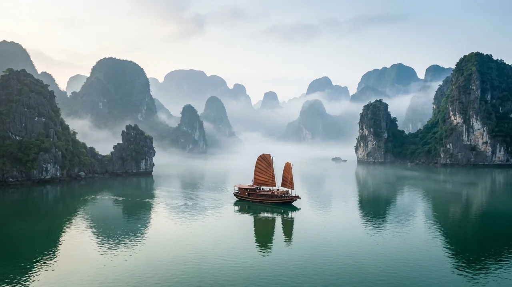
Tháng 1 - 3Mùa Xuân: Vịnh Trong Sương Khói Thủy Mặc
Thời điểm: Tháng 1 đến hết tháng 3 Dương lịchTiết trời se lạnh, sương giăng lãng đãng bao phủ các đỉnh núi đá vôi. Không gian tĩnh lặng, huyền bí mang vẻ đẹp thiền định, là thời điểm lý tưởng cho du khách muốn ngắm vịnh tĩnh tâm trên các du thuyền cao cấp.
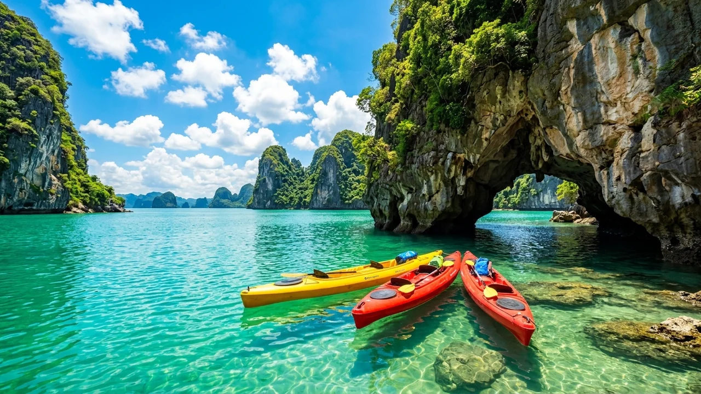
Tháng 4 - 8Mùa Hạ: Nắng Vàng Biển Ngọc & Chèo Kayak
Thời điểm: Tháng 4 đến hết tháng 8 Dương lịchThời điểm sôi động nhất của du lịch biển đảo. Nắng vàng rực rỡ, nước biển trong vắt nhìn thấy đáy, lý tưởng cho các hoạt động tắm biển Ti Tốp, lặn ngắm san hô, chèo kayak luồn qua vòm hang đá và bay thủy phi cơ ngắm cảnh từ trên cao.
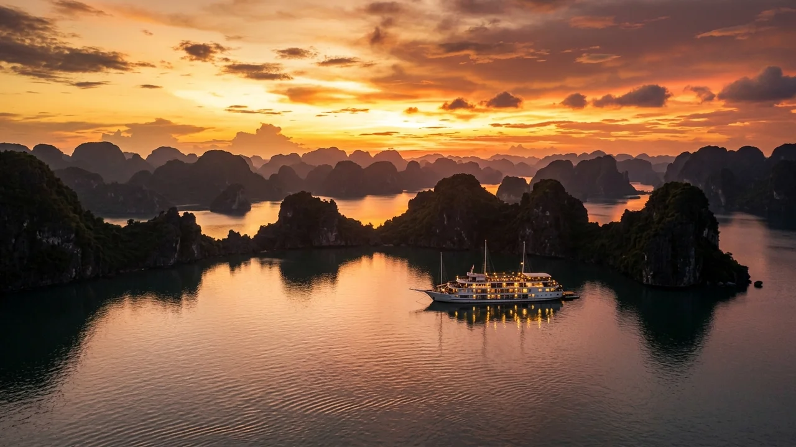
Tháng 9 - 11Mùa Thu: Hoàng Hôn Dát Vàng Lộng Lẫy
Thời điểm: Tháng 9 đến hết tháng 11 Dương lịchMùa thu là mùa đẹp nhất, lãng mạn nhất của Hạ Long. Không khí mát mẻ, trời trong xanh, gió nhẹ và hoàng hôn tím biếc dát vàng trên muôn trùng đảo đá. Trải nghiệm tiệc trà chiều hoàng hôn trên boong tàu là trải nghiệm đắt giá không thể bỏ lỡ.
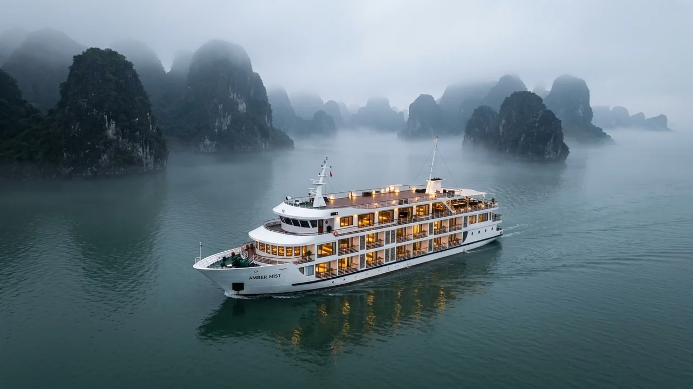
Tháng 12 - 1Mùa Đông: Du Thuyền Nghỉ Dưỡng & Ẩm Thực Ấm Áp
Thời điểm: Tháng 12 đến hết tháng 1 năm sauTiết trời lành lạnh tạo cảm giác ấm áp đặc biệt bên trong những cabin du thuyền sang trọng bằng gỗ quý. Du khách tận hưởng bữa tối hải sản nóng hổi bên ánh nến, nhâm nhi rượu vang ngắm vịnh đêm mờ sương và tham gia câu mực đêm thú vị.
🏞️ 5. Top 10 Thắng cảnh biểu tượng & Dấu tích lịch sử
Khám phá 10 danh thắng ngoại hạng định danh vẻ đẹp độc nhất vô nhị của quần thể Di sản Thiên nhiên Thế giới Vịnh Hạ Long:
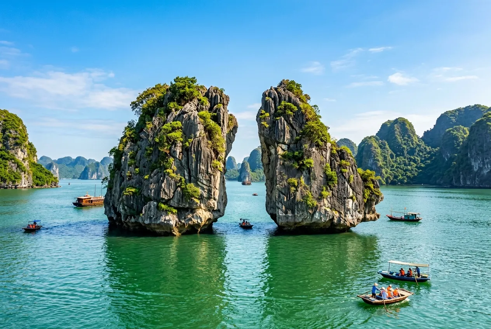
1. Hòn Trống Mái (Hòn Gà Chọi) — Biểu Tượng Vĩnh Hằng Của Vịnh Biển
Kiệt tác điêu khắc thiên nhiên kỳ vĩ giữa làn nước ngọc bích, biểu tượng trường tồn của tình yêu son sắt và du lịch Việt Nam vươn tầm thế giới.
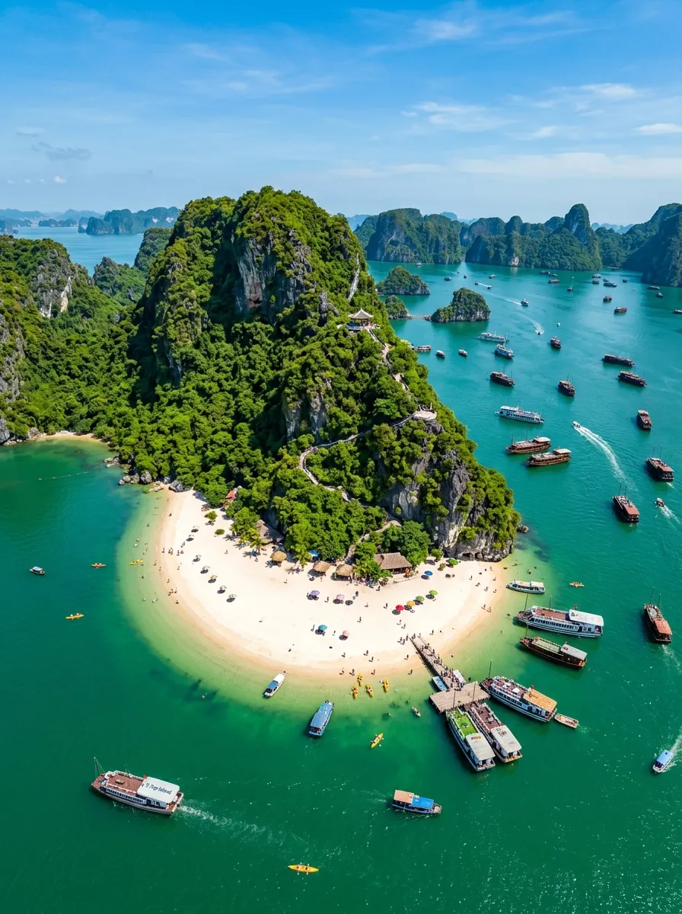
2. Đảo Ti Tốp
Chinh phục 400 bậc đá thu trọn toàn cảnh nghìn đảo đá vôi bồng bềnh giữa sóng nước và tắm biển tại bãi cát hình trăng khuyết.
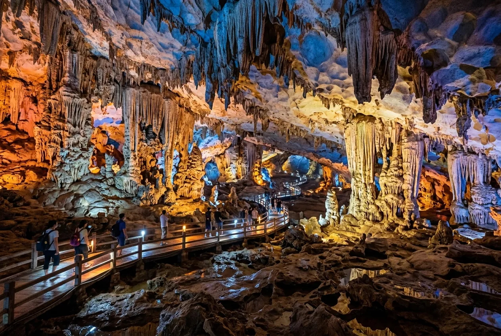
3. Hang Sửng Sốt
Vòm hang thạch nhũ khổng lồ lung linh huyền ảo tựa nhà hát opera thiên nhiên tráng lệ giữa lòng đảo đá Bồ Hòn.
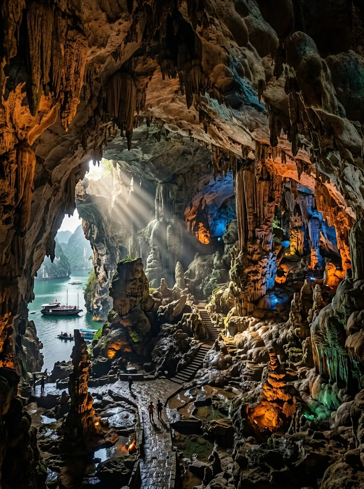
4. Động Đầu Gỗ — Trầm Tích Lịch Sử Chiến Thắng Bạch Đằng Giang
Cổ động thâm nghiêm gắn liền huyền tích cọc gỗ lim của Hưng Đạo Đại Vương, nơi lưu giữ tấm bia đá ngợi ca của vua Khải Định khắc năm 1918.
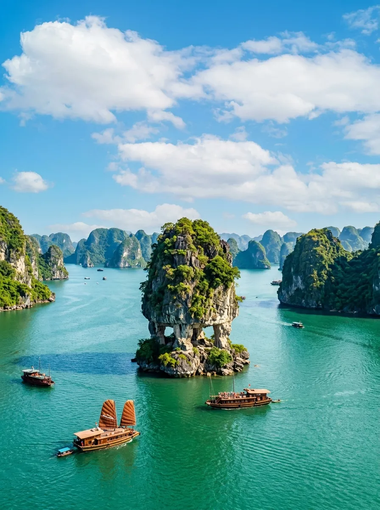
5. Hòn Đỉnh Hương
Phiến đá thiêng hình chiếc lư hương sừng sững dâng lên đất trời, biểu tượng tri ân thiên nhiên in trên tờ tiền quốc gia.
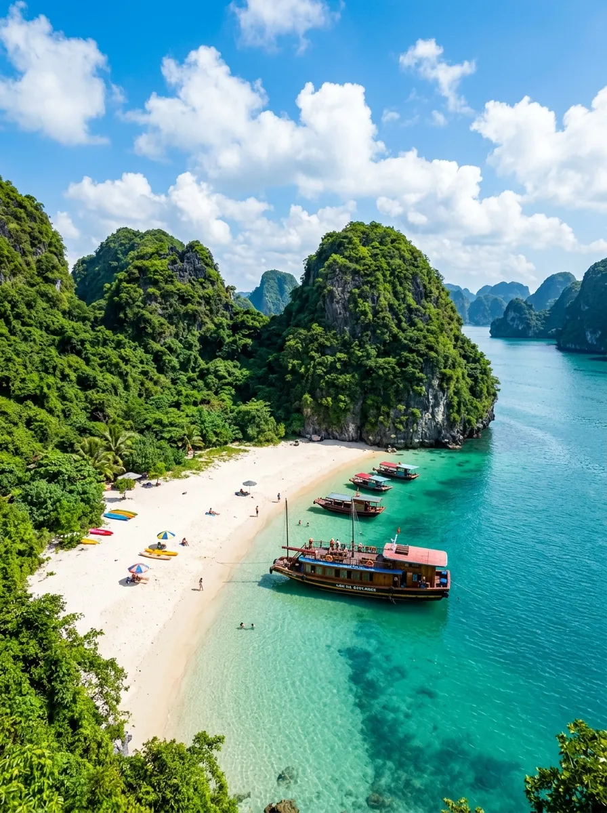
6. Vịnh Lan Hạ
Bức tranh thủy mặc thanh bình với hàng trăm bãi cát vàng nguyên sơ nép dưới chân vách đá, thiên đường chèo thuyền kayak tĩnh lặng.
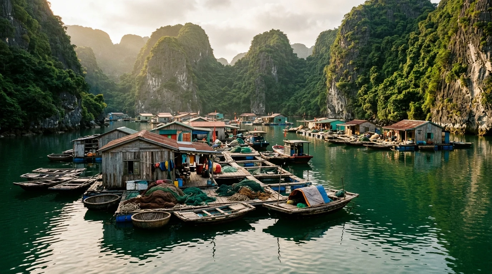
7. Làng Chài Cổ Cửa Vạn — Di Sản Làng Nổi Đẹp Nhất Thế Giới
Ngôi làng chài nổi cổ tích nép mình trong lòng núi đá vôi sừng sững, gìn giữ nếp nhà bè mộc mạc, lớp học nổi trên biển và điệu hát đúm giao duyên ngàn đời của ngư dân vịnh Bắc Bộ.
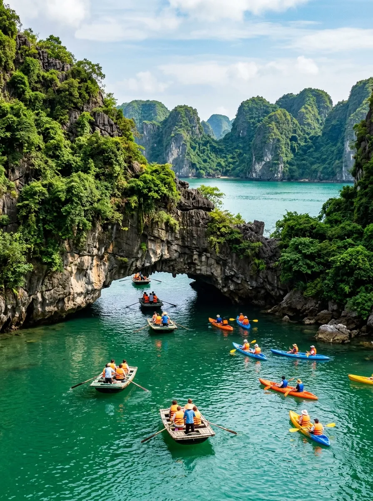
8. Hang Luồn
Lướt thuyền nan qua vòm hang đá chạm nước mở ra đầm phá ngọc bích tĩnh mịch, ngắm bầy khỉ vàng chuyền cành bên vách dựng đứng.
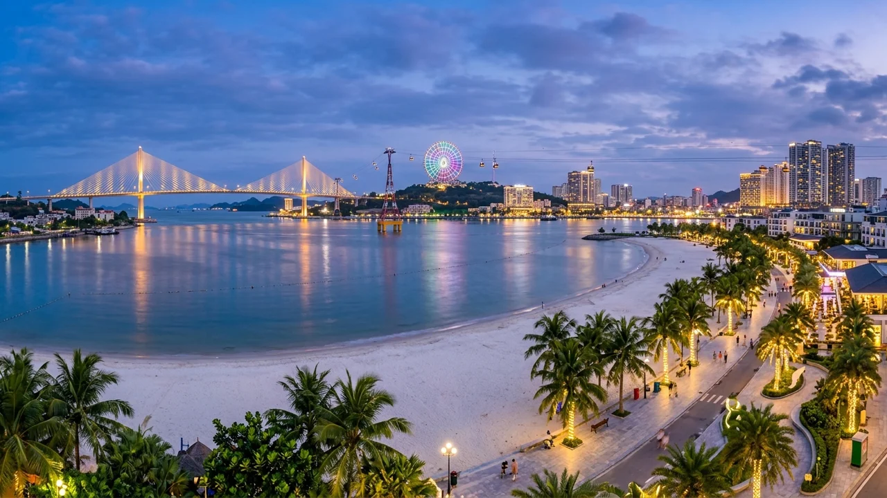
9. Bãi Cháy & Cầu Bãi Cháy
Trái tim giải trí và nghỉ dưỡng sôi động ven bờ với bãi biển cát trắng miên man và cầu dây văng tráng lệ lung linh khi phố lên đèn.
10. Thuyền Buồm Cánh Dơi Truyền Thống & Vịnh Bái Tử Long — Hồn Xưa Vịnh Hạ Long
Lắng đọng vẻ đẹp hoài niệm của cánh buồm nâu cánh dơi no gió rẽ sóng giữa muôn trùng đảo đá, hòa quyện huyền tích Rồng Mẹ Rồng Con che chở ngàn năm bờ cõi non sông.
🚗 6. Cẩm nang di chuyển & Cung đường giao thông
Hạ Long hiện sở hữu hệ thống hạ tầng giao thông đồng bộ và hiện đại bậc nhất Việt Nam với đầy đủ sân bay quốc tế, cao tốc xuyên suốt và các cảng tàu khách du lịch đẳng cấp 5 sao quốc tế:
| Phương tiện | Lộ trình / Đầu mối | Thời gian | Chi phí tham khảo | Đặc điểm & Lưu ý |
|---|---|---|---|---|
| Xe Limousine / Ô tô riêng | Hà Nội → Cao tốc Hà Nội - Hải Phòng → Cao tốc Hải Phòng - Hạ Long | 1.5 – 2 giờ | 220.000 – 280.000đ/vé | Đón trả tận nơi tại Hà Nội và các khách sạn Bãi Cháy, Tuần Châu. Xe chạy êm, xuất bến liên tục mỗi 30 phút. |
| Máy bay (Vân Đồn) | TP.HCM / Đà Nẵng → Cảng HKQT Vân Đồn (VDO) → Cao tốc về Hạ Long | 2 giờ bay + 45p xe | 1.200.000 – 2.800.000đ/vé | Sân bay tư nhân hiện đại nhất Việt Nam, có tuyến buýt miễn phí đưa đón khách từ sân bay về trung tâm TP. Hạ Long. |
| Máy bay (Cát Bi Hải Phòng) | Các tỉnh thành → Sân bay Cát Bi (HPH) → Cầu Bạch Đằng → Hạ Long | Tùy chặng bay + 35p xe | 900.000 – 2.200.000đ/vé | Nhiều chuyến bay nội địa dày đặc mỗi ngày, đi taxi/xe riêng qua cầu Bạch Đằng sang Hạ Long chỉ 30km rất nhanh. |
| Thủy phi cơ Hải Âu | Sân bay Nội Bài → Vịnh Hạ Long (Cảng Tuần Châu) | 45 phút bay | 1.800.000 – 2.500.000đ/lượt | Ngắm toàn cảnh vịnh di sản từ độ cao 300m, trải nghiệm cất/hạ cánh trên mặt nước vô cùng phấn khích. |
⚓ Hai Cảng Tàu Khách Quốc Tế Hiện Đại Nhất Việt Nam
Khi đến Hạ Long để xuống tàu tham quan hoặc lên du thuyền ngủ đêm, du khách cần lưu ý chính xác bến cảng của nhà tàu:
- Cảng tàu khách quốc tế Tuần Châu: Cảng du thuyền nhân tạo lớn nhất Việt Nam, phục vụ đa số các tuyến tàu tiếng ban ngày (Tuyến 1, 2) và nhiều du thuyền cao cấp ngủ đêm.
- Cảng tàu khách quốc tế Hạ Long (Cảng Sun Group - Bãi Cháy): Nằm ngay trung tâm Bãi Cháy, chuyên đón các siêu du thuyền quốc tế 5 sao và các tàu tham quan cao cấp thế hệ mới.
🦀 7. Tinh hoa ẩm thực đặc sản Hạ Long
Hạ Long không chỉ quyến rũ bởi non xanh nước biếc mà còn làm say lòng thực khách bởi nguồn hải sản dồi dào, tươi ngon nức tiếng miền biển Đông Bắc:
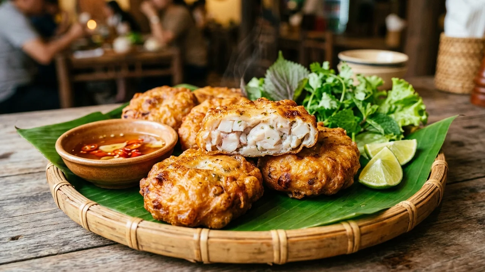
1. Chả Mực Giã Tay Hạ Long
Hạt ngọc ẩm thực đất mỏ. Từng miếng chả vàng ươm, vỏ ngoài giòn rụm bên trong ngọt đậm vị mực tươi giòn sần sật giã tay truyền thống.
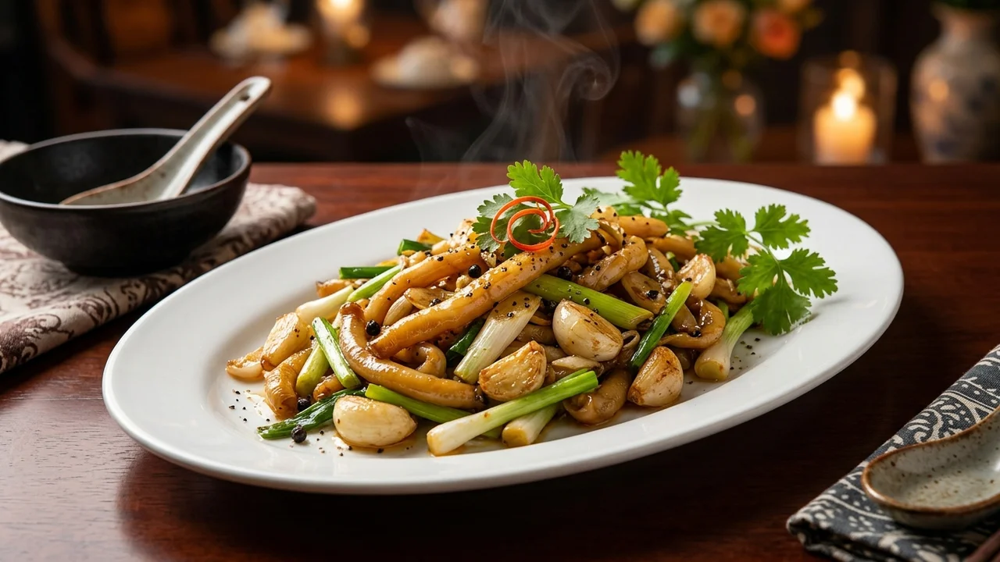
2. Sá Sùng Quan Lạn Xào Tỏi Tươi
Đặc sản quý như vàng ròng của biển đảo Vân Đồn - Quan Lạn. Thịt sá sùng dai giòn, ngọt thanh đậm đà xào thơm nức mũi với tép tỏi ta.
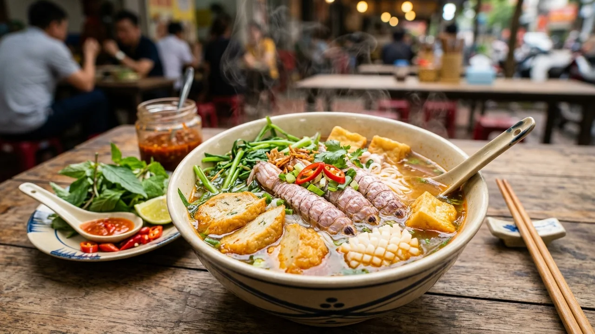
3. Bún Hải Sản Bề Bề Hạ Long
Món ăn sáng quốc dân của người dân thành phố biển. Bề bề bóc nõn tươi rói quyện cùng nước dùng chua cay ngọt thanh đậm đà phong vị biển khơi.
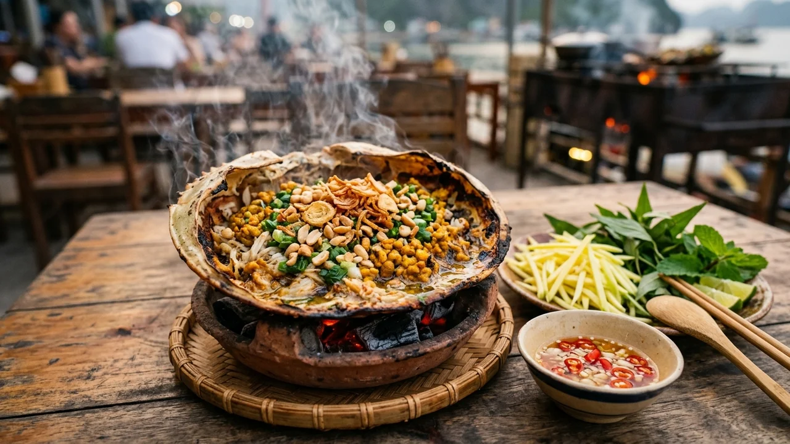
4. Sam Biển 7 Món Nướng Mỡ Hành
Đặc sản quý hiếm chỉ có ở vùng biển mặn. Trứng sam vàng ươm bùi béo, thịt sam nướng mỡ hành xèo xèo thơm nức mũi chấm nước mắm ớt chua cay.
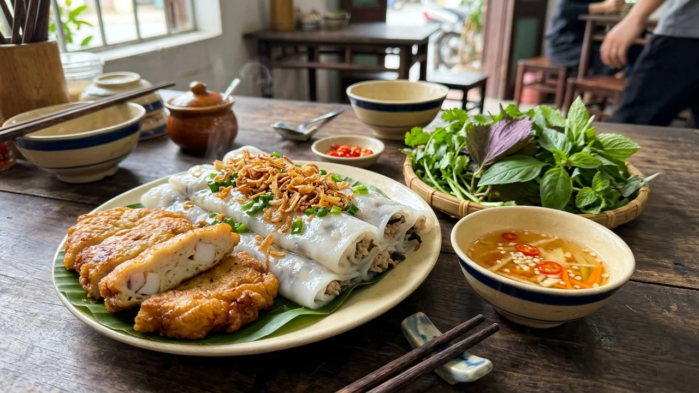
5. Bánh Cuốn Nóng Chả Mực
Sự kết hợp hoàn hảo giữa bánh tráng mỏng mềm mướt và chả mực giòn sần sật nức danh, chấm nước mắm tiêu dưa góp ấm lòng ngày mới.
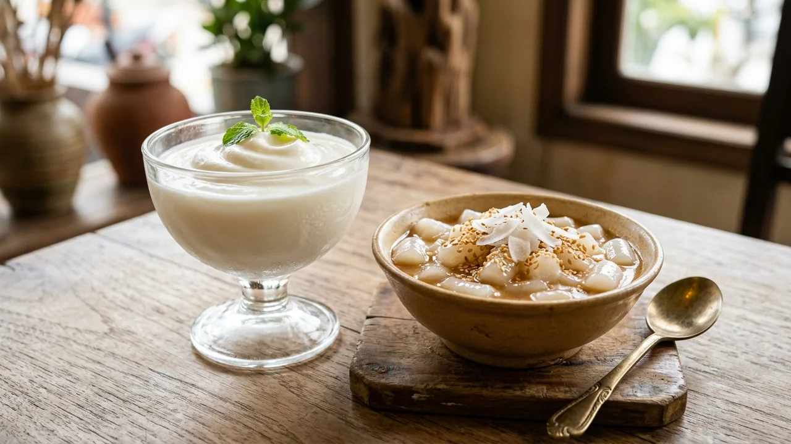
6. Sữa Chua Trân Châu Cốt Dừa Hạ Long
Món tráng miệng huyền thoại khởi nguồn từ Hạ Long. Vị chua thanh dẻo quánh của sữa chua hòa quyện cùng trân châu ấm nóng ngập cốt dừa thơm béo.
🎫 8. Bảng giá vé tham quan & Dịch vụ niêm yết
Giá vé tham quan danh lam thắng cảnh Vịnh Hạ Long được Hội đồng Nhân dân và Ủy ban Nhân dân tỉnh Quảng Ninh niêm yết minh bạch theo từng tuyến hải trình cụ thể:
| Tuyến tham quan | Cảnh điểm trong tuyến | Thời gian tàu | Vé thắng cảnh | Vé tàu ghép (tham khảo) |
|---|---|---|---|---|
| Tuyến 1 (Truyền thống) | Cảng → Động Thiên Cung → Động Đầu Gỗ → Hòn Chó Đá → Hòn Đỉnh Hương → Hòn Trống Mái | 3.5 – 4 giờ | 250.000đ/người | 150.000 – 200.000đ/người |
| Tuyến 2 (Hấp dẫn nhất) | Cảng → Đảo Ti Tốp → Hang Sửng Sốt → Hang Luồn → Hồ Động Tiên → Hang Trống | 5.5 – 6 giờ | 250.000đ/người | 200.000 – 250.000đ/người |
| Tuyến 3 (Văn hóa biển) | Cảng → Trung tâm Văn hóa nổi Cửa Vạn → Hang Tiên Ông → Áng Dù → Hồ Ba Hầm | Cả ngày | 200.000đ/người | Thuê trọn tàu theo chuyến |
| Vé ngủ đêm trên vịnh | Ngủ đêm 1 đêm (2N1Đ) trên các tuyến quy định | 2 ngày 1 đêm | 550.000đ/người | Bao gồm trong giá tour cruise |
| Phí qua cảng Tuần Châu / Sun | Phí tiện ích hành khách tại nhà ga quốc tế | Mỗi lượt xuất cảng | 40.000đ/lượt | Thu kèm vé thắng cảnh |
📌 Lưu ý: Trẻ em dưới 1.2m hoặc dưới 7 tuổi được miễn phí vé thắng cảnh vịnh. Người cao tuổi từ đủ 60 tuổi trở lên (quốc tịch Việt Nam) được giảm 50% giá vé thắng cảnh khi xuất trình CCCD gốc. Giá vé tàu ghép có thể biến động nhẹ vào dịp lễ Tết hoặc cuối tuần cao điểm mùa hè.
🗺️ 9. Gợi ý lịch trình & Mẹo trải nghiệm bản địa an toàn
🛥️ Gợi ý Hải Trình 2 Ngày 1 Đêm (2N1Đ) Du Thuyền Cao Cấp Chuẩn Gu
- Ngày 1: Hà Nội → Hạ Long → Hang Sửng Sốt → Đảo Ti Tốp → Tiệc hoàng hôn
• 08:30: Xe Limousine đón từ Hà Nội chạy cao tốc 1.5h đến Cảng tàu khách quốc tế Hạ Long.
• 12:00: Check-in du thuyền 5 sao, thưởng thức đồ uống chào mừng và dùng buffet hải sản tươi sống trong lúc tàu nhổ neo lướt qua Hòn Trống Mái, Đỉnh Hương.
• 14:30: Thám hiểm kỳ quan Hang Sửng Sốt rộng lớn trên đảo Bồ Hòn.
• 16:00: Tắm biển Ti Tốp hoặc leo 400 bậc đá ngắm hoàng hôn vịnh từ trên đỉnh núi.
• 17:30: Sunset Party trên sundeck với trà chiều, vang nhẹ và ngắm hoàng hôn dát vàng.
• 19:30: Tiệc tối hải sản thượng hạng, câu mực đêm cùng thủy thủ đoàn. - Ngày 2: Thái Cực Quyền đón bình minh → Chèo Kayak Hang Luồn → Trả phòng về bờ
• 06:30: Tập Taichi đón ánh bình minh tinh khôi trên boong thượng.
• 07:30: Thuyền nan đưa khách vào Hang Luồn ngắm bầy khỉ hoang dã chuyền vách đá.
• 09:30: Thưởng thức bữa trưa sớm (brunch) trong lúc tàu thong dong quay về bến cảng.
• 11:30: Cập cảng Tuần Châu, ghé Chợ Hạ Long 1 mua chả mực giã tay nóng hổi làm quà trước khi về Hà Nội.
💡 Mẹo Bản Địa Tránh Bẫy & Bảo Vệ Môi Trường Vịnh Di Sản
- Quy định Không Rác Thải Nhựa (Say No to Single-Use Plastic): Ban Quản lý Vịnh Hạ Long cấm tuyệt đối mang chai nhựa một lần, túi ni-lông xuống tàu tham quan vịnh. Hãy mang theo bình nước cá nhân để tiếp nước trên tàu.
- Chọn tuyến đi phù hợp: Khách đi trong ngày ưu tiên chọn Tuyến 2 (6 tiếng) vì có đầy đủ Sửng Sốt, Ti Tốp và chèo thuyền Kayak Hang Luồn, giá trị trải nghiệm vượt trội so với Tuyến 1 chỉ 4 tiếng.
- Mua chả mực chuẩn gốc: Luôn thử trước tại quầy chả mực giã tay truyền thống trong Chợ Hạ Long 1 (Hòn Gai). Chả mực thật cắn vào sần sật miếng mực nang dày, không bị bột hay bở.
- Mang trang phục: Giày thể thao bám tốt chống trơn trượt khi leo hang đá và bậc đá Ti Tốp; áo khoác gió nhẹ nếu đi vào các tháng mùa thu - đông.